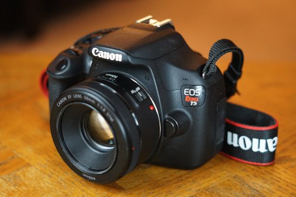

I had an incredibly lucky day! On the drive back from work, I spotted a DSLR in the road. Now you think, "oh it was just on the sidewalk." No! It was quite literally on the asphalt and I have no idea how it was not run over. Anyway, I took it home!
Check this guy out. He's a Canon EOS Rebel T5 with a Canon EF 50mm 1:1.8. No lens cap! I didn't take it off for the photos. This guy is surprisingly lightweight. I was shocked when I picked him up. I've been using my largest lens lately so my camera is extra heavy... Somehow sustained minimal to no damage. I didn't take a test shot but he seemed to be functional.
My options are pretty limited for finding the owner of lost items. I'm one of those strange people who still use Craigslist but almost no one else checks it. The last time I posted on Reddit (with a new account because I don't have one), I got shadowbanned immediately. I baleted my multitude of facebook accounts in 2015.... So I made a CL post and hoped for the best!
Beliebe it or not (I don't believe it) I got an email with a perfect description of the camera, lens, and missing lens cap within a few hours! I was able to return it to him this evening. Unfortunately, I didn't have an extra 49mm lens cap to send home with it.
I asked the dude how he dropped it in the street. He said it was in his backpack and he was messing around with his sweater and didn't hear it fall due to headphones. Seems possible but still...

Music update: I have solved the great Music Issue of 2023.
First, after days of searching, I found my lightning to 3.5mm adapters. After tearing apart my entire apartment, it was located in my bento box of adapters. Right... where... I should have guessed.....
Secondly, I was recommended VLC for iOS. I downloaded it and it allows me to copy files directly to my phone WITHOUT ITUNES ON DEBIAN. I removed all the songs from my phone with iTunes and started fresh. I'm very happy with it!
During my last Thrift Store Visit, I found albums from 3 bands I've never heard of and bought them with no regrets. I love being able to take chances like this. You really win some and lose some but the wins make it all worth it.
A man with a high pitched voice!!!! This is great
Ryan's
Ryan's
for my mom. I promise I don't own a cricut